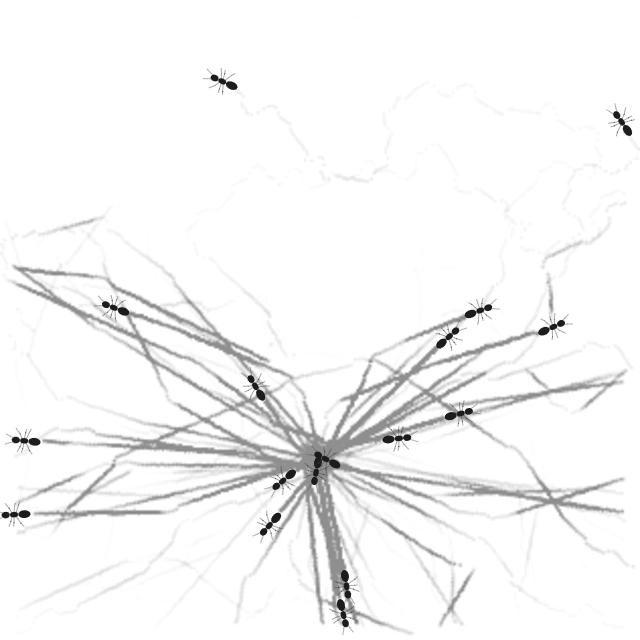
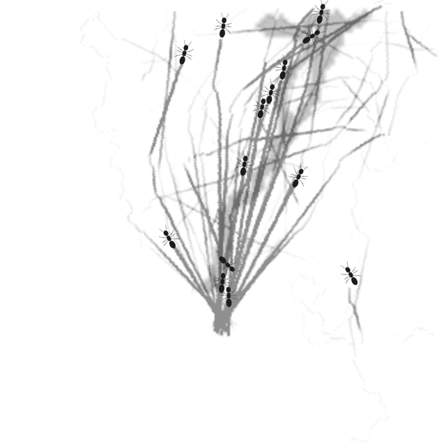
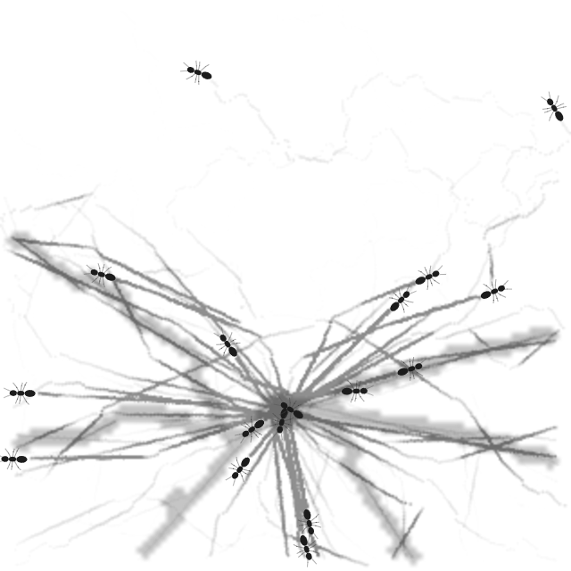
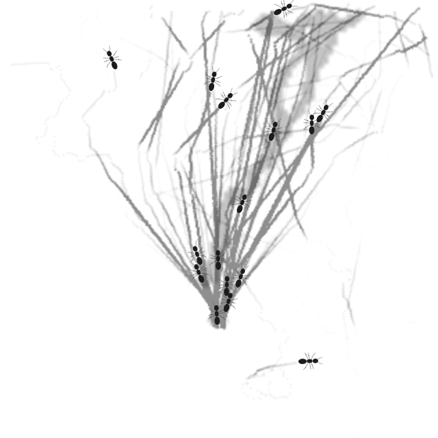
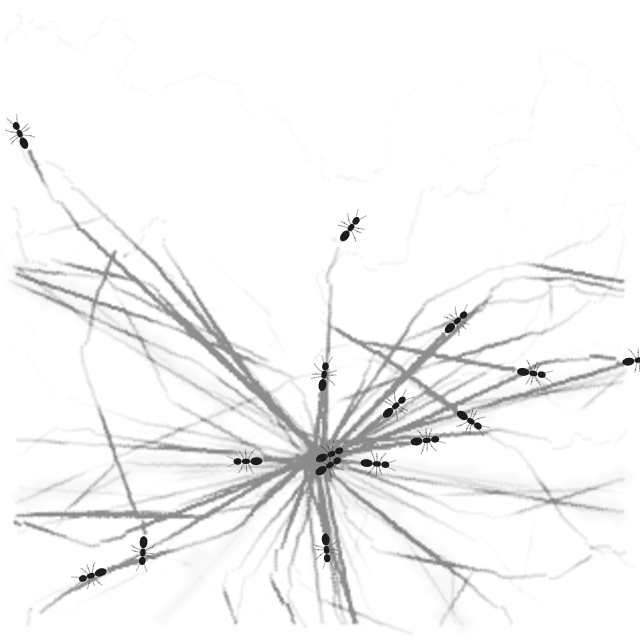
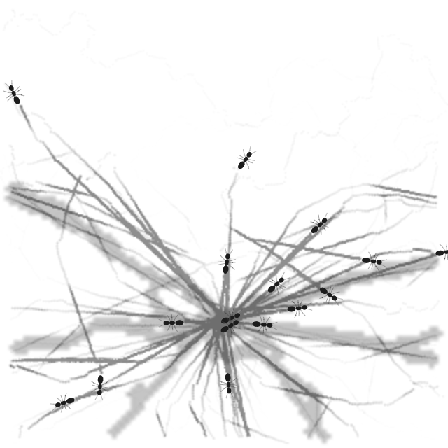
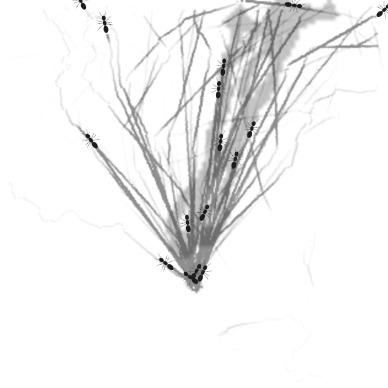
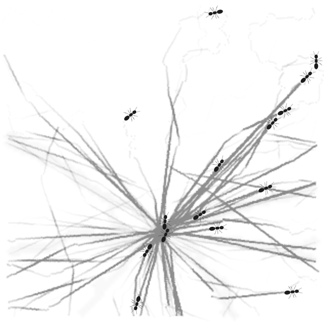
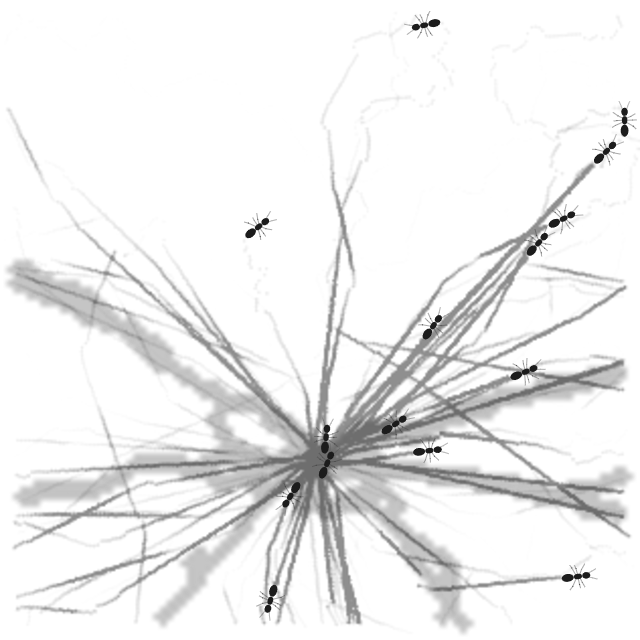

| Material × heading | H0 · Production heading First Plate 84.017 s | H1 · Isotropic diagnostic First Plate 75.017 s |
|---|---|---|
| Production material | ||
| Strong material |
Native 640×640 milestone stills
| Milestone | H0/M0 | H0/M1 | H1/M0 | H1/M1 |
|---|---|---|---|---|
| Immediately before first Plate |  |  |  |  |
| Immediately after first Plate |  |  |  | |
| First Plate +15 model seconds |  |  |  |  |
| First Plate +30 model seconds |  |  |  |  |